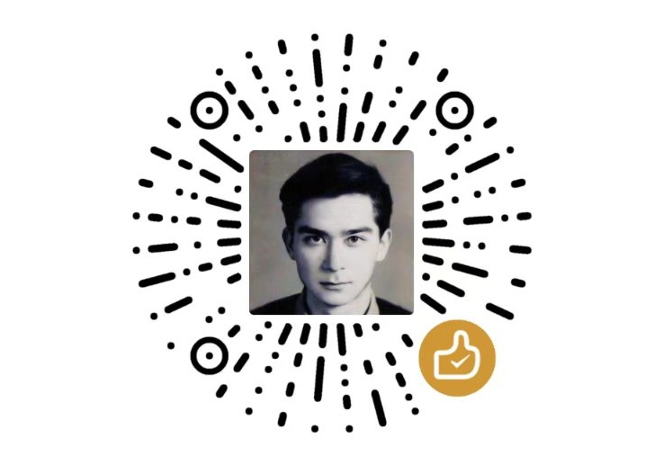

视频播放引擎与时控
智能突破
2.0x
采用底层 HTMLVideoElement 钩子拦截，真正突破原生播放器限速防线
自动静音并保持静默挂机，上班打卡与学习互不干扰
针对有最低时长要求的课程，视频结束后自动重新播放补足时长
多模型 AI 智能答题引擎
DeepSeek 官方或兼容 API 密钥。已自动适配身份鉴权头
默认使用厂商官方节点；如通过 OneAPI / 学校代理等中转，可直接修改为中转 URL
终端在线连通性测试 (多模型适配)
无人值守与行为模拟
拟人算法
自动检测本节课件视频及习题完成情况，全自动平滑跨越至下一节
打开作业/考试列表页后，自动按序连续进出并调用 AI 完成所有未交作业，直至全消。仅在作业/测试界面生效！
3 秒
答题提交或章节跳转前增加随机拟人停顿延迟，有效防范平台高频行为风控
使用浏览器后台闹钟，按本机时间每天固定时刻通知与语音播报
防离开检测防护已开启
页面自动屏蔽鼠标移出与窗口失焦暂停事件
底层 Hook 引擎正常
通过 HTMLVideoElement 原型链双重挂载保护
实时运行日志与状态监视器
LIVE 动态监听
暂无运行日志，请在超星学习通页面开启自动化...
关于与技术支持
PRO 旗舰版
学习通网课控制台 PRO
v1.0.0 Stable全功能底层 Hook 驱动 · 多 AI 大模型联动答题引擎
📮 开发者联系与开源项目
开发者技术支持邮箱
etonsalmon160@gmail.com
GitHub 开源仓库项目地址
etonsalmon160-source/chaoxing-pro-engine
☕ 自由赞赏 / 鼓励开源
半公益致谢与科研资金支持
本插件为 完全免费且无任何功能限制的开源项目。
“开源制作不易，您的每一笔资金都将用于生物学研究。”
若助手帮助您节省了宝贵时间，欢迎自由赞赏支持（完全自愿，赞赏与否均享完整功能）！

微信/赞赏码：ETO1024's Tip Code✨ 核心优势与特色功能
- ⚡ 底层 HTMLVideoElement 原型链挂载：突破限制真正极速倍速播放
- 🧠 2025/2026 前沿 AI 大模型：在线自动拉取识别模型列表 (DeepSeek-R1/V3, GPT-4o, Gemini 2.0, Claude 3.7)
- 🛡️ 智能无死锁跳转：4.5s 动态超时锁 + 看门狗彻底消除连跳卡死
- 💻 悬浮 HUD 小窗 & 全屏大窗双终端：数据多端无缝同步控制